/UI/UX — Desktop Application Design
The Swash Desktop application is a software application which shall be installed in the user's computer or laptop. This application has a cloud storage feature where the patient demographics and vital data are stored to the cloud. The desktop application communicates with the Swash pulmonary device and collects data from it, storing it to the cloud. The Swash Android application connects to the cloud and pulls patient information and its corresponding reports for the doctor to view and comment — which can then be saved as a PDF.
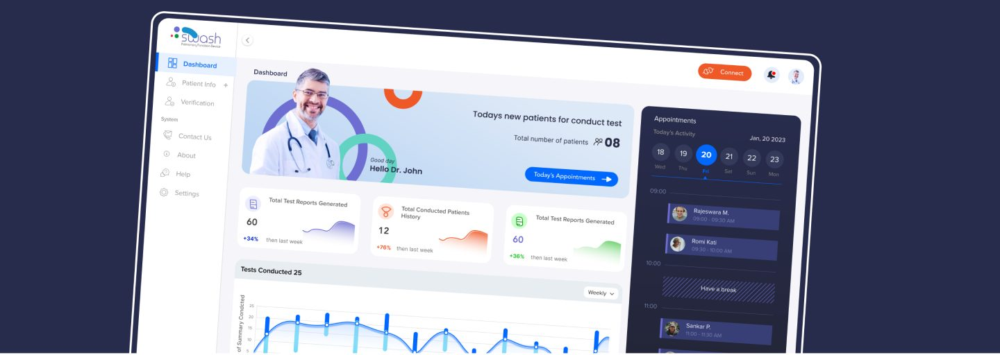
Swash needed a desktop-first interface that could keep dense clinical data legible without slowing down the people using it every day.
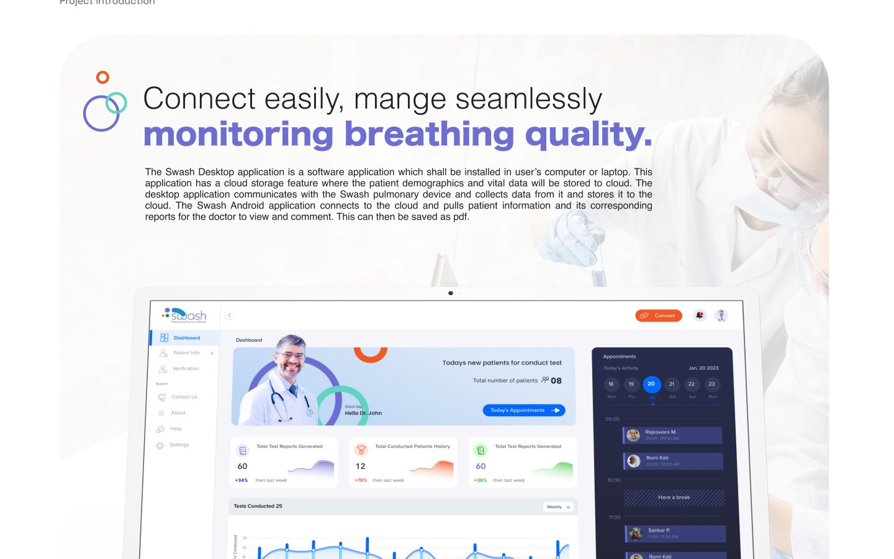
Gather requirements from stakeholders to understand the objectives, user needs, and desired features of the dashboard.
A wireframe is a low-fidelity visual blueprint of a product's layout and structure. It shows content placement, navigation, and user flow without visual styling. Wireframes help teams validate ideas early and align before detailed design.
Visual design focuses on the look and feel of the interface, including colors, typography, icons, and spacing. It enhances usability and brand identity while making the product visually engaging.
Prototyping is the process of creating interactive models to simulate user interactions and flows. It helps test ideas early, gather feedback, and refine the user experience before development.
Doctor and technician journeys are mapped end to end — from login through dashboards, patient info, verification, and conducting a test — so navigation stays predictable across every role that touches the system.
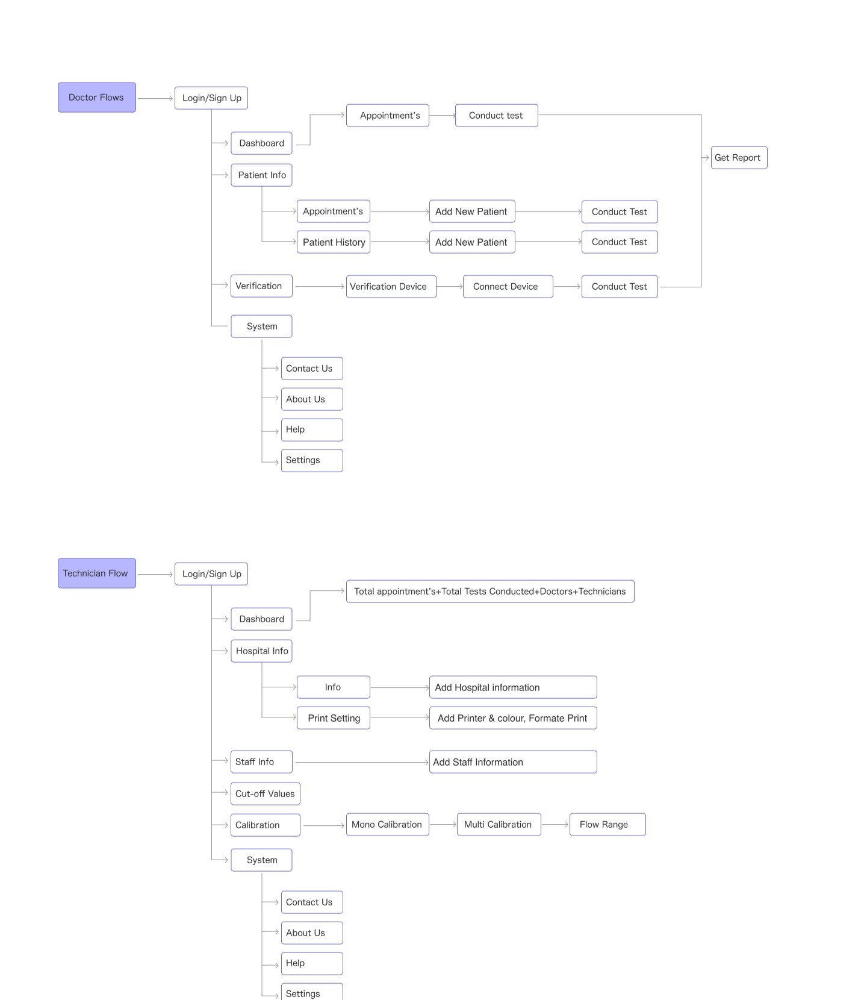
A dense grid view lets reviewers scan large record sets at a glance without losing row-level detail.
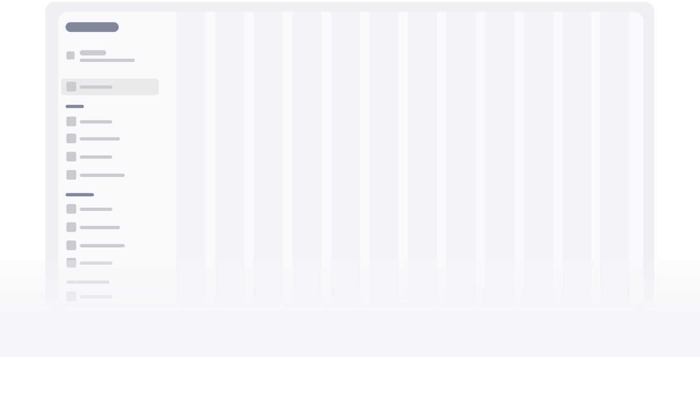
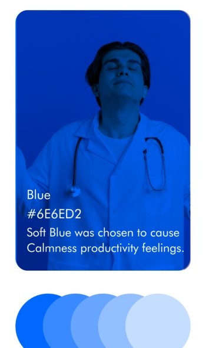
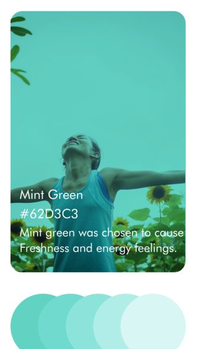
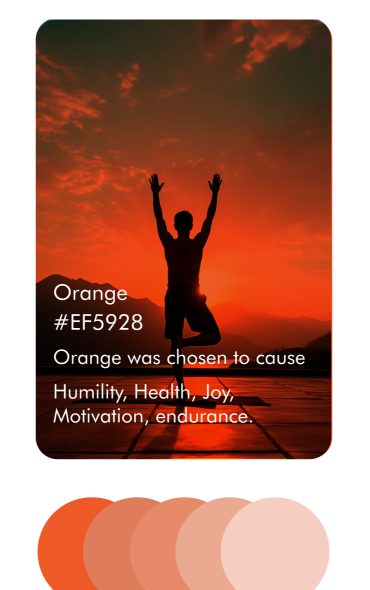
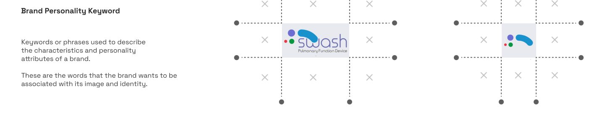
In our SWASH design, we incorporate the Hiragino font family.
Colors
A shared design-system UI kit kept spacing, type, and color consistent across every flow in the product.
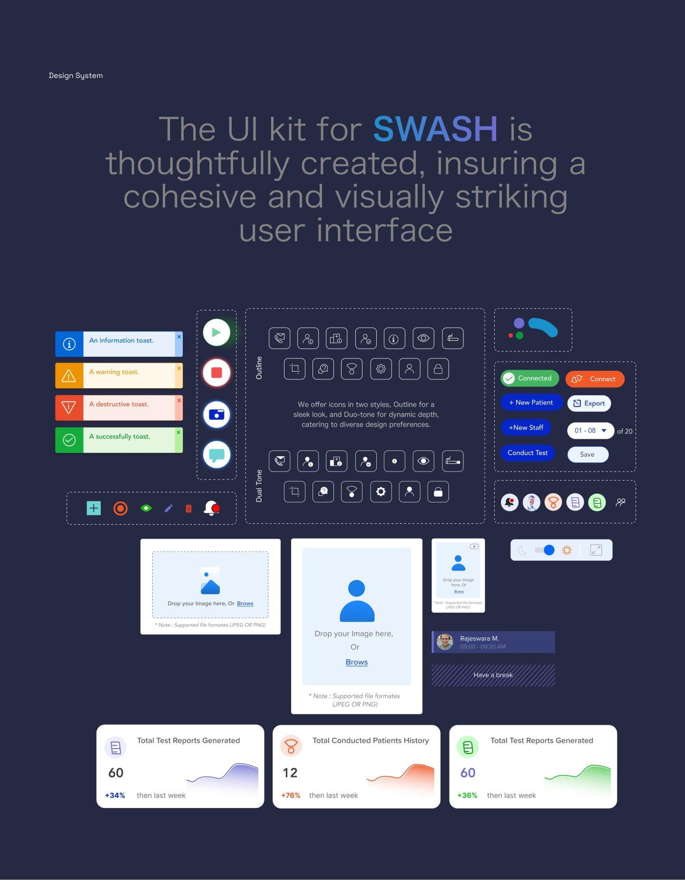
Stacked laptop mockups show the dashboard adapting cleanly across working setups.
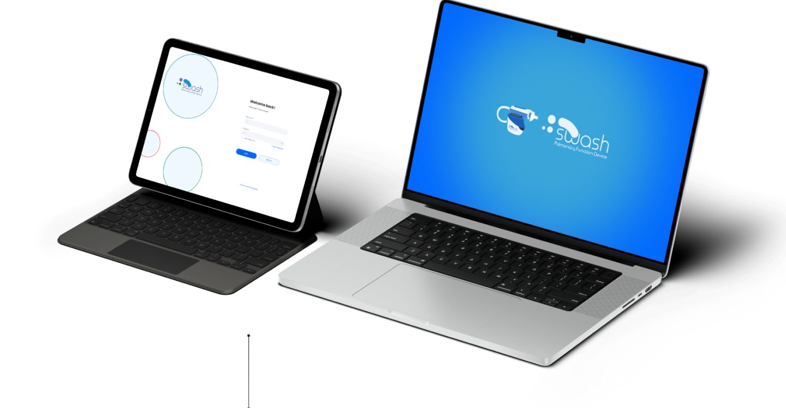
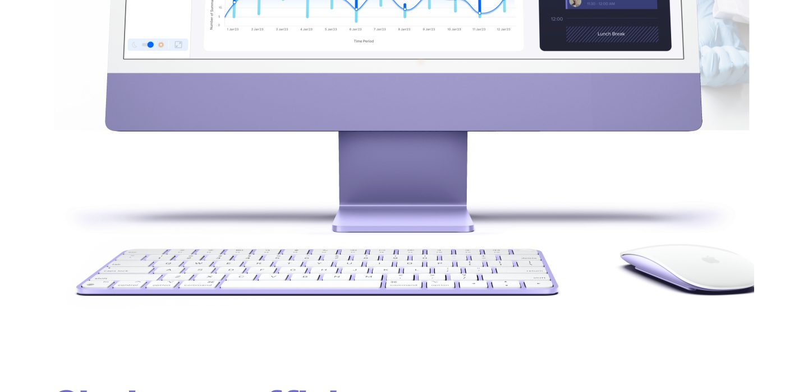
A 5-step verification flow guides reviewers from selecting a test type through to a completed report.
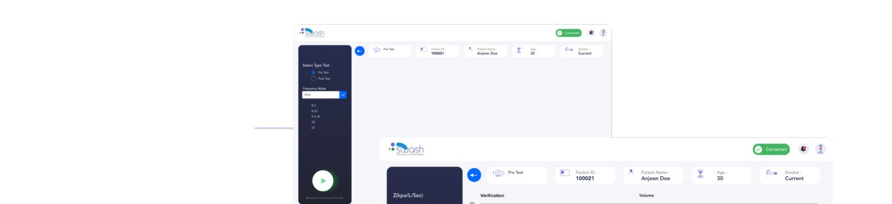
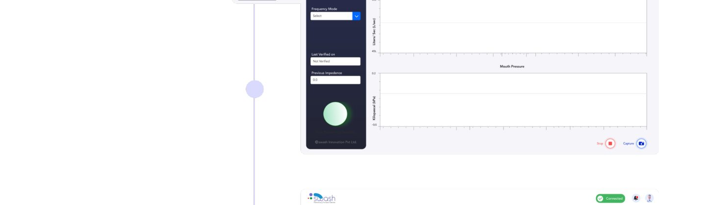
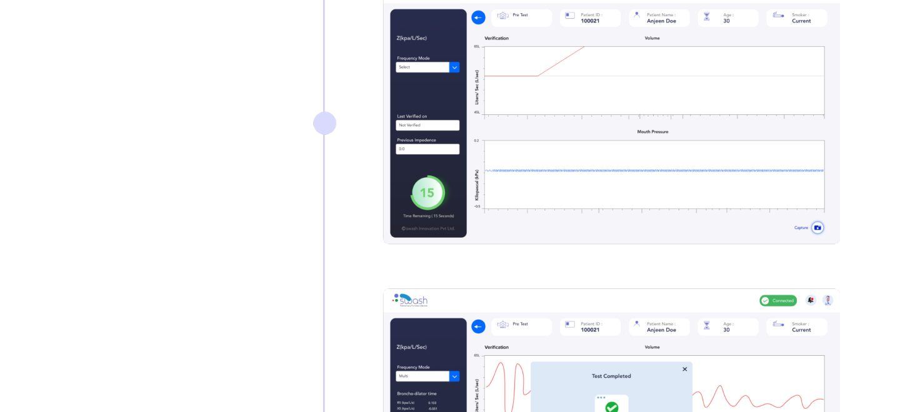
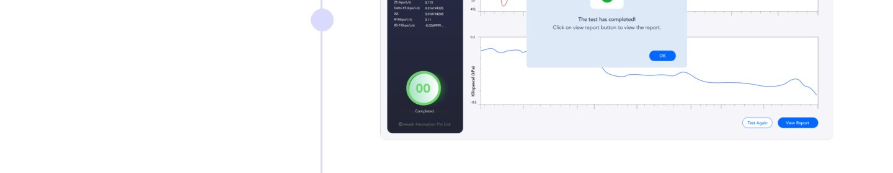
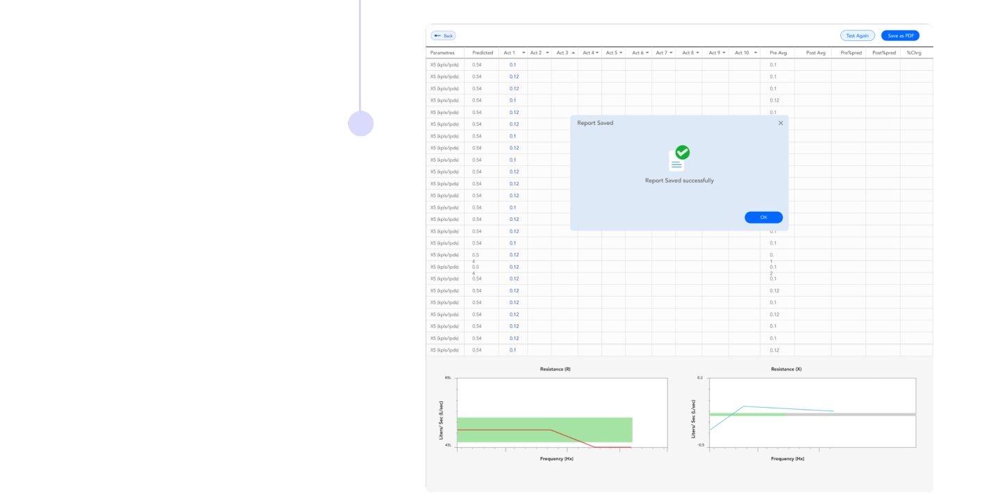
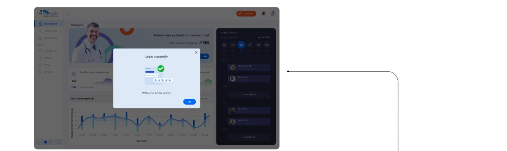
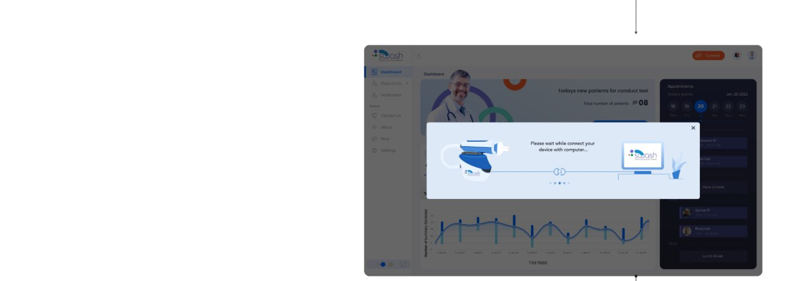
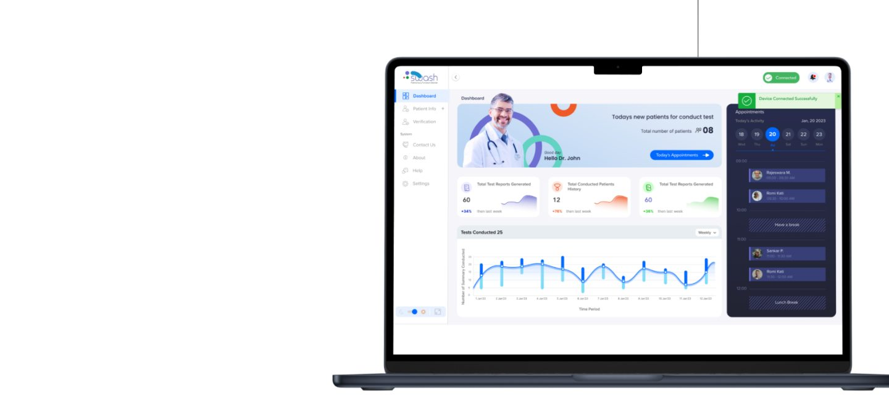
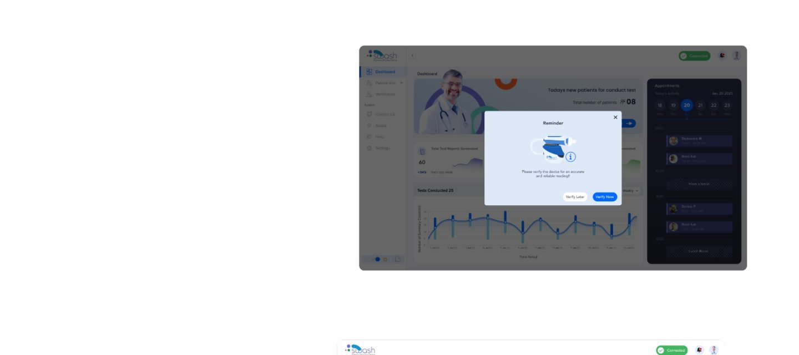
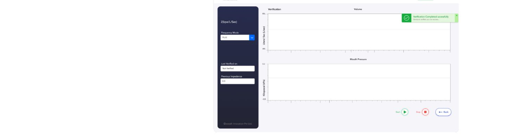
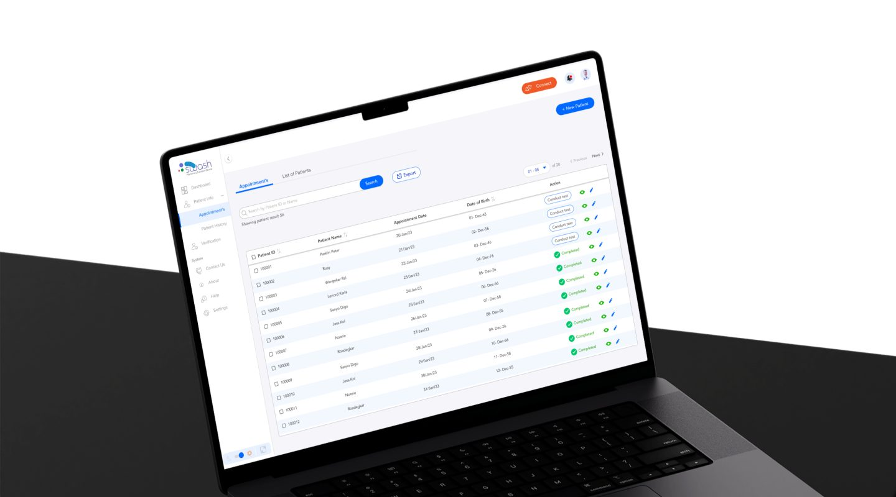
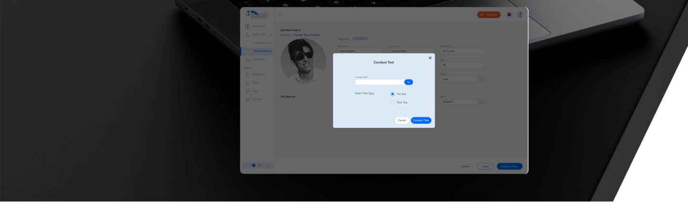
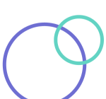